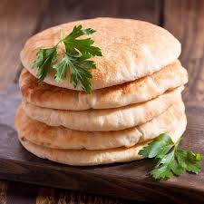

pita
Bread is a good side dish for nearly all meals in this region. The most popular type of bread is pita, one of the oldest types of bread in the world. Pita is also known as Arabic bread, Lebanese bread, or Syrian bread. Pita is a leavened and flat type of bread. Pita differs from country to country in terms of cooking technique and shaping. This bread has pockets formed as a result of fermentation. Another type is known as pide, which is common in Turkey. It is usually used as a side meal with doner kebab, which is also one of the unique dishes of the region. Pita is a delicious bread that compliments any meal. And you can easily bake it at home.
Ayran
.jpg)
Milk and dairy products, especially yogurt and cheese, are pretty common in Middle Eastern countries. Ayran is basically a chilled and diluted, healthy yogurt drink. It may be hard to think of yogurt as just a beverage, but it is indispensable for many Middle Easterners to complement any meal. It especially compliments kebabs and spicy dishes. It is also served as a cold appetizer when various greens or vegetables are added to it.
pilaf
.jpg)
Pilaf is made with rice or grains that have been cooked with oil or butter and chopped onion before being simmered with broth. While pilaf is sometimes preferred as a main dish, but it can also be enjoyed as a side dish. From ceremonial meals to everyday tables, pilaf is a staple in any Middle Eastern table. For example, some pilaf recipes, such as white rice pilaf, can be an easy-to-make meal, while other recipes require more elaborate techniques. Pilaf has many varieties, from rice to bulgur to other ingredients, such as meat or vegetables, and even nuts or fruits. A different type of pilaf can be found in each country in the Middle East, and there is undoubtedly one that fits your taste.
Kebab
.jpg)
Kebab, which we can also call a cooking technique, has different names and ingredients in different cultures. Minced meat and chicken, usually with vegetables, is grilled on skewers known as shish over an open fire. However, differentiating from region to region, culture to culture, a kebab can mean any grilled meat. It can be cooked in the oven or sautéed and even stewed, a delicious example being eggplant kebab. The most widely known types of kebab are shish taouk (marinated chicken skewer), adana kebab, which is one of the prominent dishes of Turkish cuisine, kafta kebab, widely consumed in the Arab world, and chelow kabab with steamed rice, Iran’s national dish.
Omani shuwa
.jpg)
Omani shuwa is a slow-cooked, tasty, marinated lamb that is juicy and tender. This dish, whose main ingredient is either lamb, goat, or camel, is traditionally cooked over a slow fire after being marinated in spices for 48 hours. It is then wrapped in banana leaves and placed on hot charcoals. This traditional cooking method is not the most convenient for modern cooks, so modified recipes allow you to enjoy this deliciously spicy dish at home.
Falafel
.jpg)
One of the global icons of Middle Eastern cuisine, falafel is a dish originating from the Levant. As a widespread street food that many people enjoy around the globe, it can also be delicious when prepared from scratch at home. It is made by mixing chickpea patties or broad bean paste with various spices and frying it in oil. You can enjoy it served with many side dishes, such as hummus, baba ghannouj, and fresh greens. It also makes an excellent ingredient for a flavorful and nutritious wrap. Rich in proteins and a staple for many vegetarian and vegan diets, this dish has become immensely popular around the world.
Baba Ghannouj – Eggplant Sauce
.jpg)
Baba ghannouj is a popular appetizer made from eggplant and tahini. It is smooth and has a creamy texture. It is traditionally served with pita bread. Besides being a healthy side dish, it has an incredibly delicious taste. Eggplant lovers should not miss out on this delightful dish.